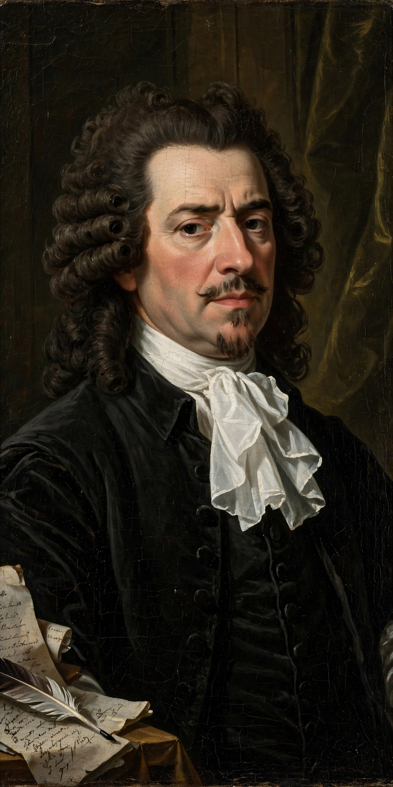

Jean Racine
| Born | 22 December 1639, La Ferté-Milon, France |
|---|---|
| Died | 21 April 1699 (aged 59), Paris |
| Occupation | Playwright, tragedian |
| Movement | French classicism |
| Notable works | Andromaque, Britannicus, Bérénice, Phèdre, Athalie |

Jean-Baptiste Racine (French: [ʒɑ̃ batist ʁasin]; 22 December 1639 – 21 April 1699), often called simply Racine, was a French dramatist, one of the three great playwrights of 17th-century France, along with Molière and Corneille. He is primarily famous for his tragedies, written in classical alexandrine verse of extraordinary musicality and psychological precision, which feature passionate characters (often women) destroyed by love and destiny.
Life
Orphaned young, Racine was educated at the Jansenist schools of Port-Royal, whose austere theology left a lasting mark on his vision of human helplessness before an unyielding fate. He came to Paris seeking a literary career, and after early successes — Alexandre le Grand (1665) and the triumph of Andromaque (1667) — he displaced the ageing Corneille as France's leading tragedian. His tragedies draw on Greek and Roman subjects: Britannicus (1669), Bérénice (1670), Bajazet (1672), Mithridate (1673), Iphigénie (1674), and his masterpiece Phèdre (1677), reworking Euripides' Hippolytus and Seneca.
Later career
The lukewarm reception of Phèdre, sabotaged by a rival faction that staged Pradon's competing play, and a religious conversion led Racine to abandon the public theatre in 1677. He became royal historiographer to Louis XIV, married, and returned to drama only at the request of Madame de Maintenon, for whom he wrote the biblical tragedies Esther (1689) and Athalie (1691) for the schoolgirls of Saint-Cyr. He died in 1699 and was buried at Port-Royal; his remains were later moved to the church of Saint-Étienne-du-Mont in Paris.
Style
Racine's tragedies obey the classical unities, use a remarkably restricted vocabulary, and achieve their effects through the music of the verse and the dissection of passion. Where his English contemporary Shakespeare expands, Racine concentrates: in Phèdre, a single forbidden love, confessed in a single scene, drives every character to ruin.